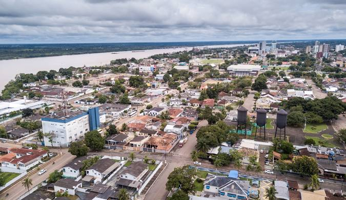

Rondônia é um estado localizado na região Norte do Brasil, conhecido por sua exuberante natureza e rica biodiversidade. Com vastas florestas amazônicas, rios caudalosos e uma fauna diversificada, o estado é um verdadeiro paraíso ecológico. Sua economia é baseada principalmente na agricultura, pecuária e exploração de recursos naturais. Porto Velho, a capital, é um polo comercial e cultural importante. A história de Rondônia está marcada pela colonização e pela construção da estrada de ferro Madeira-Mamoré, que conecta o estado a outras regiões. A hospitalidade de seu povo e o contato direto com a natureza fazem de Rondônia um destino único.
 Voltar